La Casa de Delfos es una escuela dedicada al estudio de los saberes simbólicos, entendidos como formas de reflexión y experiencia en torno a los símbolos, rituales y lenguajes oraculares...
Nuestra misión
Crear espacios de formación, estudio y reflexión en torno a los saberes simbólicos y espirituales, promoviendo procesos de aprendizaje que integren pensamiento, experiencia y transformación interior.
Nuestra visión
Consolidarnos como un espacio de referencia en la formación y el estudio de los saberes simbólicos, promoviendo una comprensión profunda del símbolo como vía de conocimiento.